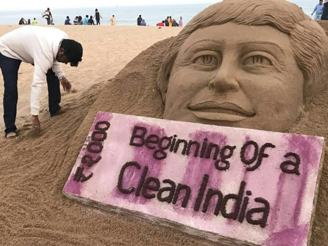

The demonetisation of Rs500 and Rs1,000 banknotes was a policy enacted by the Government of India on 8 November 2016, ceasing the usage of all Rs500 (US$7.40) and Rs1,000 (US$15) banknotes of the Mahatma Gandhi Series as legal tender in India from 9 November 2016.
The announcement was made by the Prime Minister of India Narendra Modi in an unscheduled live televised address at 20:15IST on 8 November.In the announcement, Modi declared that use of all Rs500 and Rs1,000 banknotes of the Mahatma Gandhi Series would be invalid after midnight of that day,and announced the issuance of new Rs500 and Rs2,000 banknotes of the Mahatma Gandhi New Series in exchange for the old banknotes. However,the banknote denominations of Rs100, Rs50, Rs20, Rs10 and Rs5 of the Mahatma Gandhi Series and Rs2 and Rs1 remained legal tender and were unaffected by the policy. The government claimed that the demonetisation was an effort to stop counterfeiting of the current banknotes allegedly used for funding terrorism, as well as a crack down on black money in the country.The move was also described as an effort to reduce corruption, the use of drugs,and smuggling.
However, in the days following the demonetisation, banks and ATMs across the country faced severe cash shortageswith severe detrimental effects on a number of small businesses, agriculture, and transportation.People seeking to exchange their notes had to stand in lengthy queues,and several deaths were linked to the inconveniences caused due to the rush to exchange cash. Also, following the announcement,the BSE SENSEX and NIFTY 50 stock indices crashed for the next two days. Initially, the move received support from several bankers as well as from some international commentators.It was heavily criticised by members of the opposition parties,leading to debates in both houses of parliament and triggering organised protests against the government in several places across India.As the cash shortages grew in the weeks following the move, the demonetisation was heavily criticised by several economists.
Historically, previous Indian governments had demonetised bank notes.In January 1946,banknotes of 1000 and 10,000 rupees were withdrawn and new notes of 1,000, 5,000 and 10,000 rupees were introduced in 1954.The Janata Party coalition government had again demonetised banknotes of 1,000,5,000 and 10,000 rupees on 16 January 1978 as a means of curbing counterfeit money and black money.
In 2012, the Central Board of Direct Taxes had recommended against demonetisation, saying in a report that "demonetisation may not be a solution for tackling black money or economy,which is largely held in the form of benami properties, bullion and jewellery".According to data from income tax probes, black money holders keep only 6% or less of their ill-gotten wealth as cash, hence targeting this cash may not be a successful strategy.
On 28 October 2016 the total banknotes in circulation in India was Rs17.77 trillion. In terms of value, the annual report of Reserve Bank of India (RBI) of 31 March 2016 stated that total bank notes in circulation valued to Rs16.42 trillion(US$240 billion) of which nearly 86% (around Rs14.18 trillion (US$210 billion)) were Rs500 and Rs1,000 banknotes. In terms of volume, the report stated that 24% (around 22.03 billion) of the total 90266 million banknotes were in circulation. In the past, the Bharatiya Janata Party (BJP) had opposed demonetisation. BJP spokesperson Meenakshi Lekhi had said in 2014 that "The aam aurats and the aadmis (general population), those who are illiterate and have no access to banking facilities, will be the ones to be hit by such diversionary measures." Modi said that the queues due to demonetisation were the last queues that would end all other queues.
The Reserve Bank of India laid down a detailed procedure for the exchange of the demonetised banknotes with new Rs500 and Rs2,000 banknotes of the Mahatma Gandhi New Series and Rs100 banknotes of the preceding Mahatma Gandhi Series.Following are the key points:
1.Citizens will have until 30 December 2016 to tender their old banknotes at any office of the RBI or any bank branch and credit the value into their respective bank accounts.
2.Cash withdrawals were restricted to Rs10,000/day and Rs20,000/week per account from 10-13 Nov 2016.This limit was increased to Rs24,000 per week from 14 Nov.
3.Initially, all ATMs were dispensing banknotes of only Rs50 and Rs100 denominations and cash withdrawals from ATMs were restricted to Rs2000 per day.From 14 November onwards,ATMs recalibrated to dispense new Rs500 and Rs2000 notes will allow a maximum withdrawal of Rs2,500 per day, while other ATMs dispensing banknotes of only Rs50 and Rs100 denominations will allow a maximum withdrawal of Rs2000 per day.
However, exceptions were given to petrol, CNG and gas stations, government hospitals, railway and airline booking counters, state-government recognised dairies and ration stores, and crematoriums to accept the old Rs500 and Rs1,000 banknotes until 11 November 2016, which was later extended to 14 November 2016 and once again to 24 November 2016.International airports were also instructed to facilitate an exchange of notes amounting to a total value of Rs5000 for foreign tourists and out-bound passengers.
The decision met with mixed initial reactions Several bankers like Arundhati Bhattacharya (Chairperson of State Bank of India) and Chanda Kochhar(MD & CEO of ICICI Bank)appreciated the move in the sense that it would help curb black money.Businessmen Anand Mahindra(Mahindra Group),Sajjan Jindal(JSW Group),Kunal Bahl(Snapdeal and FreeCharge)also supported the move adding that it would also accelerate e-commerce.
Finance Minister Arun Jaitley said that demonetisation would clean the complete economic system, increase the size of economy and revenue base. He mentioned the demonetisation along with the upcoming Goods and Services Tax (GST) as "an attempt to change the spending habit and lifestyle.
The Indian National Congress spokesperson Randeep Surjewala welcomed the move but remained sceptical on the consequences that would follow.Chief Minister of Bihar Nitish Kumar supported the move.The demonetisation also got support from Chief Minister of Andhra Pradesh-Nara Chandrababu Naidu.Former Chief Election Commissioner of India S. Y. Quraishi said demonetisation could lead to long term electoral reforms.Indian social activist Anna Hazare hailed demonetisation as a revolutionary step.
By and large, international response was positive which saw the move as a bold crackdown on corruption.International Monetary Fund (IMF) issued a statement supporting Modi's efforts to fight corruption by the demonetisation policy.
The Indian Supreme Court while hearing one among a slew of cases filed against the sudden demonetisation decision in various courts,observed that it "appears to be carpet bombing and not surgical strike" which government repeatedly claims it to be. Nobel laureate Indian economist Amartya Sen, severely critcized the demonetisation move calling it a "despotic action" among other things.
Former Senior Vice-President and Chief Economist of the World Bank, Kaushik Basu, called it a 'major mistake' and said that the 'damage' is likely to be much greater than any possible benefits. Pronab Sen, former Chief Statistician and Planning Commision of India member, called it a "hollow move" since it did not really address any of the purported goals of tackling black money or fake currency.
Prabhat Patnaik, a former professor of economics at the Jawaharlal Nehru University, Delhi called the move 'witless' and 'anti-people'. He criticised the simple way in which black money was assumed as "a hoard of cash",saying that it would have little effect in eliminating "black activities" while "causing much hardship to common people."
Chief Ministers of several Indian states like Mamata Banerjee,Arvind Kejriwal and Pinarayi Vijayan have criticized and led major protests against the decision in their states and in parliament. Initially, the move to demonetise and try to hinder black money was appreciated, but the manner in which it was carried out by causing hardships to common people was criticised. A Public Interest Litigation (PIL) was filed in Madras High Court by M Seeni Ahamed, General Secretary of the Indian National League, to scrap the decision. The High Court dismissed the PIL stating that it could not interfere in monetary policies of the government.Similar PILs were also filed in the Supreme Court of India.Supreme Court of India is yet to decide on the matter .It is listed for hearing on 2nd December 2016.
As the demonetisation was opposed in both houses of the parliament,it triggered organised nationwide strikes across India.The Opposition involving parties like Indian National Congress, Bahujan Samaj Party, Trinamool Congress,DMK,JD(U),AIADMK, Nationalist Congress Party, Left, Rashtriya Janata Dal and the Samajwadi Party decided to observe ‘Akrosh Diwas’ as, a protest campaign day on November 28 and launch protests in front of banks, demanding that money be returned to people. In the state of Bihar,15 trains were blocked and stranded, while the states of West Bengal, Maharashtra and Uttar Pradesh saw protest marches and rallies led by opposition parties.
In the state of Kerala, shops and business establishments were shut, with school and colleges closed throughout the state, while movements of private vehicles were also disrupted in Northern Kerala. The Congress Party has decided to launch a nation-wide movement to expose the "biggest scam" of independent India, said spokesperson leader Randeep Surjewala on 31st December 2016. The first phase would take place from January 1-10, second phase from January 11-20 and third phase from January 20-30.
The scarcity of cash due to demonetisation led to chaos, and most people holding old banknotes faced difficulties exchanging them due to endless lines outside banks and ATMs across India, which became a daily routine for millions of people waiting to deposit or exchange the Rs500 and Rs1000 banknotes since 9 November.ATMs were running out of cash after a few hours of being functional, and around half the ATMs in the country were non-functional.Sporadic violence was reported in New Delhi, but there were no reports of any grievous injury,people attacked bank premises and ATMs,Deaths were also attributed to lack of medical help due to refusal of old banknotes by hospitals.
As a combined effect of demonetisation and US presidential election, the stock market indices dropped to an around six-month low in the week following the announcement.The day after the demonetisation announcement, BSE SENSEX crashed nearly 1689 points and NIFTY 50 plunged by over 541 points.By the end of the intraday trading section on 15 November 2016,the BSE SENSEX index was lower by 565 points and the NIFTY 50 index was below 8100 intraday.
In the first four days after the announcement of the step, about Rs3 trillion in the form of old Rs500 and Rs1,000 banknotes had been deposited in the banking system and about Rs500 billion had been dispensed via withdrawals from bank accounts,ATMs as well as exchanges over the bank counters.Within these four days,the banking system has handled about 180 million transactions.The State Bank of India reported to have received more than Rs300 billion (US$4.5 billion) in bank deposit in first two days after demonetisation.
A spike in the usage of debit card and credit card post demonetisation was also reported.Between November 10 and November 27, banks reported exchange and deposits of demonetised banknotes worth Rs8.45 trillion and deposits of Rs8.11 trillion .During this period, an amount of Rs2.16 lakh crore had been withdrawn by people from their accounts. In Malda, a district believed to be a transit-point for fake Indian currencies,a large sum of cash deposits in dormant accounts were also reported. According to The Economic Times, more than 80 percent of fake currency in India originates from Malda district in West Bengal.
The Finance Ministry instructed all revenue intelligence agencies to join the crackdown on forex traders, hawala operators and jewellers besides tracking movement of demonetised currency notes.It was reported that the Prime Minister’s Office (PMO) and the Prime Minister Modi himself were directly coordinating the raids conducted by the Income Tax, Enforcement Directorate (ED) and other agencies. As of 23 December, PMO received around 700 calls giving information about black money and it directly forwarded the information to various law enforcement agencies for further action.
Income Tax departments raided various illegal tax-evasive businesses in Delhi, Mumbai, Chandigarh, Ludhiana and other cities that traded with demonetised currency.The Enforcement Directorate issued several FEMA notices to forex and gold traders. Large sum of cash in defunct notes were seized in different parts of the country.In Chhattisgarh liquid cash worth of Rs4.4 million (US$65,000) was seized.
As of December 28, official sources said that the Income Tax department detected over Rs 4,172 crore of un-disclosed income and seized new notes worth Rs 105 crore as part of its country-wide operations. The department carried out a total of 983 search, survey and enquiry operations under the provisions of the Income Tax Act and has issued 5,027 notices to various entities on charges of tax evasion and hawala-like dealings. The department also seized cash and jewellery worth over Rs549 crore out of which the new currency seized (majority of them Rs 2000 notes) is valued at about Rs 105 crore. The department also referred a total of 477 cases to other agencies like the CBI and the Enforcement Directorate (ED) to probe other financial crimes like money laundering, disproportionate assets and corruption.
This would further send out a good signal to investors who are or have been willing to invest in the Indian market for a very long time but were somewhere uncertain about the security of their investment as they were aware of the corruption happening in India. This measure taken by the Modi government would certainly lead to more foreign investment as the companies are willing to do business in economies which are least corrupt.
he success of this policy as of now cannot be scaled as it totally depends upon implementation process but what one can be sure about is that this step would bring an huge amount of undisclosed assets into picture which could further be used by the government to fight against the main issues such as poverty and lack of good healthcare system.

